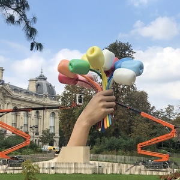
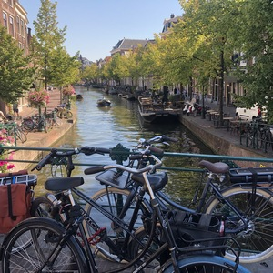
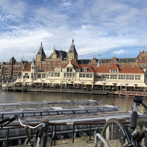
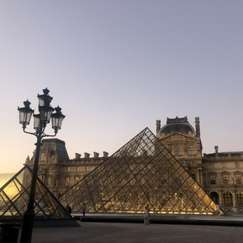

Найкращі місця для подорожі
Зараз ви побачите цікаві місця, та міста в яких ці споруди збудовно.

Букет тюльпанів
Скульптура Джеффа Кунса у Парижі, біля Єлисейських Полів[1][2]. Скульптура створена у 2016—2019 роках та присвячена пам'яті жертв терактів у Парижі у листопаді 2015 року[1]. Композиція зображує частину руки і пензель, що тримає 11 тюльпанів (12 квітка, що бракує, — символ жертв теракту). Створено скульптуру на прохання екс-посла США у Франції Джейн Хартлі, яка цим хотіла висловити підтримку французам

Амстердам
Познайомтеся з Амстердамом очима місцевого жителя та отримайте індивідуальне знайомство з містом із місцевим гідом, яке добре знає місто. Пориньте у місцевий спосіб життя, досліджуючи визначні пам'ятки міста та приховані перлини.

Центральний вокзал Амстердама
головний залізничний вокзал Нідерландської столиці. Збудований у 1881-1889 роках архітектором Пітером Кейперсом за участю Адольфа Леонарда ван Гендта. У 1885 році Кейперс також спроектував будівлю Державного музею в Амстердамі, яка зовні схожа на Центральний вокзал.
